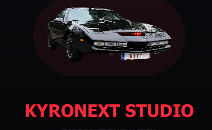

EN LIGNE
K.A.R.R.
Unité d'analyse et de stratégie
NVIDIA ORIN NX · 16 GB RAM
LLM LOCAL · canal sécurisé
Un accès clair aux différentes unités KYRONEX. Sélectionnez un cerveau, consultez son matériel, vérifiez son état puis ouvrez directement sa connexion sécurisée.

Unité d'analyse et de stratégie
NVIDIA ORIN NX · 16 GB RAM
LLM LOCAL · canal sécurisé
Unité principale K2000
NVIDIA ORIN NANO · 8 GB RAM
LLM LOCAL · conversation locale
Unité haute capacité
NVIDIA AGX ORIN · FLAGSHIP
Architecture de nouvelle génération
Unité Dadoo · branche graphique
NVIDIA ORIN NX · 8 GB RAM
Interface et services distants
Branche technique · Frank / KR-95
KIRONEX K-4000 · NVIDIA ORIN NANO 8 GB
Projet et documentation par Manix
Unité de Pascal Fairon
NVIDIA ORIN NANO SUPER · 8 GB
LLM LOCAL · unité propriétaire
Neural node KYRONEX
Nœud d'intelligence en préparation
Connexion bientôt disponible
Neural node KYRONEX
Nœud d'intelligence en préparation
Connexion bientôt disponible
Sélectionnez une unité pour vérifier sa connexion.
Écoutez une courte transmission de démonstration. Cette fonction n'interfère pas avec les unités sélectionnées.